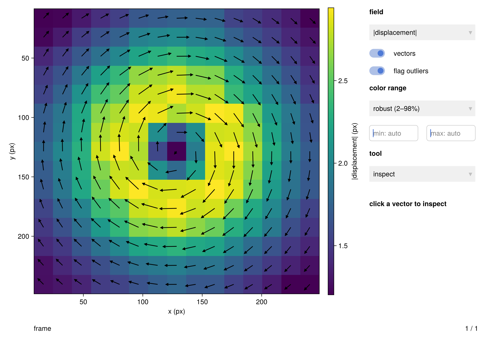
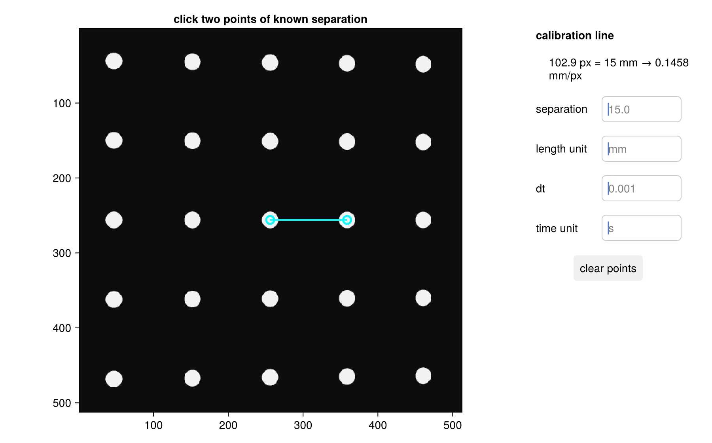
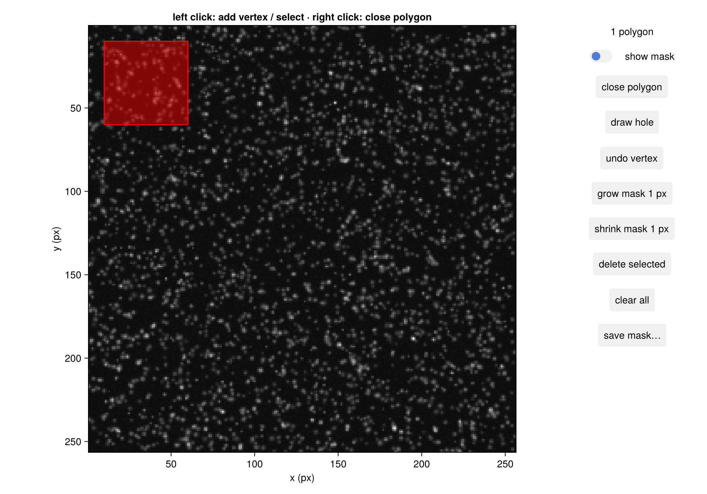
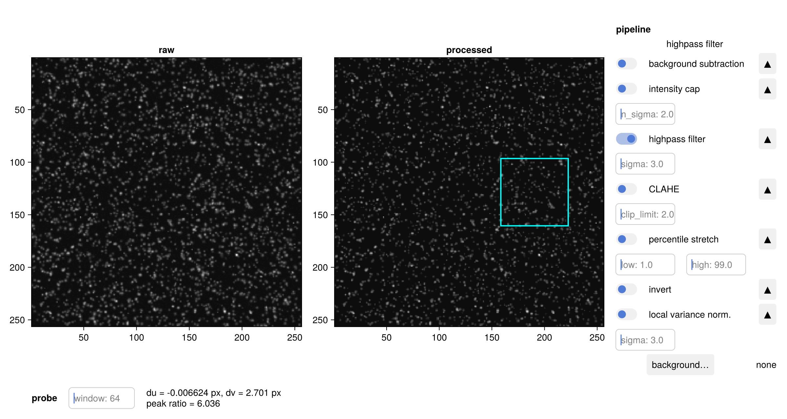
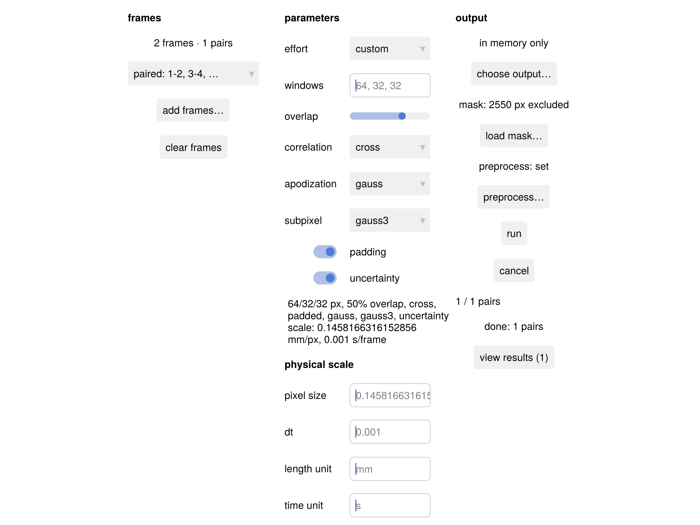
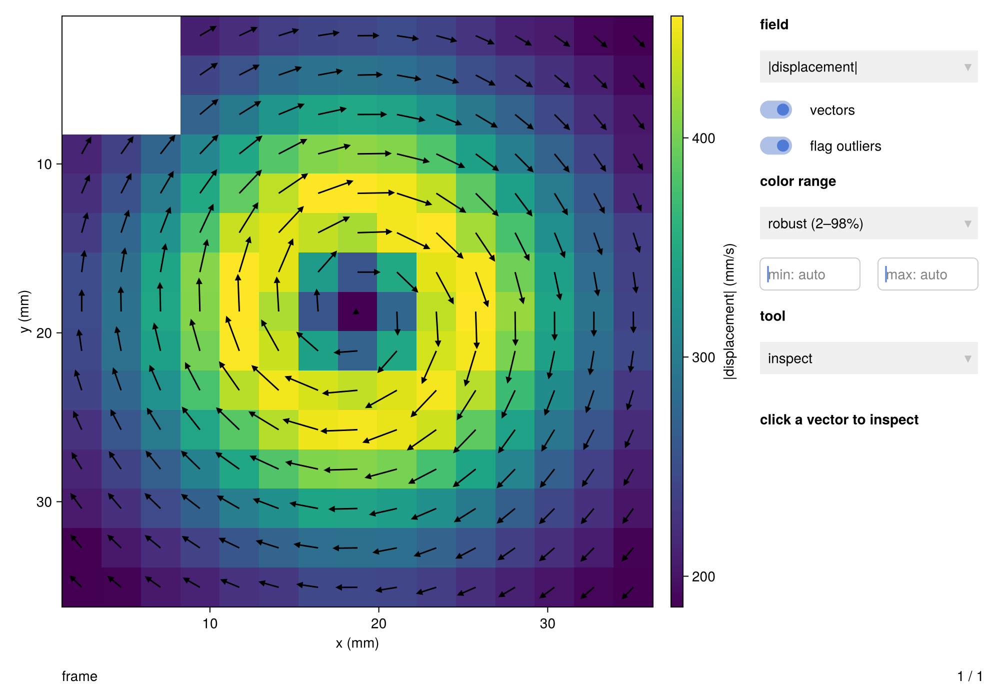
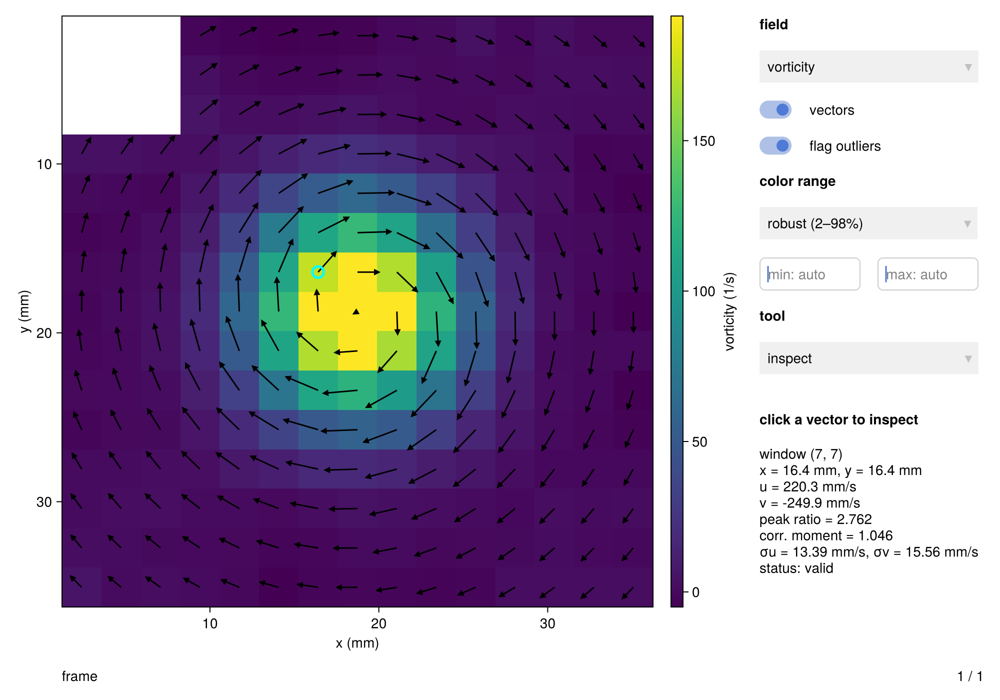
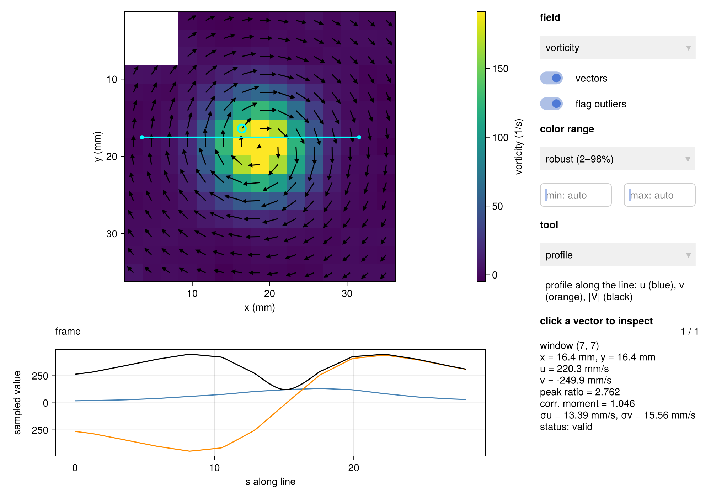
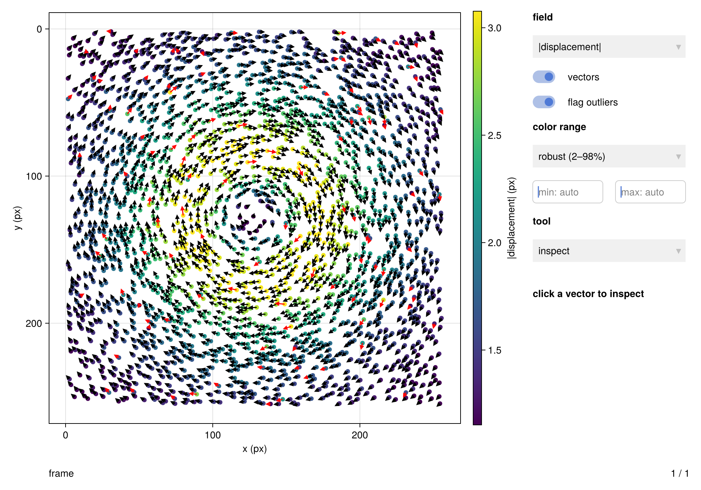

A tour of the graphical user interface (GUI)
This tutorial takes a pair of particle images to an explorable vector field in three form actions, then improves that first result the way a real analysis grows: attach a physical scale, mask what should not correlate, tune preprocessing against a live correlation probe, re-run, and analyze the flow. Calibration review, stereo, and particle tracking make a brief appearance at the end.
The GUI lives in a companion package, HammerheadGUI, so the core package never carries plotting dependencies. Install and launch it like any Julia package:
pkg> add HammerheadGUI # `]` at the julia> prompt opens pkg>
julia> using HammerheadGUI
julia> batch_runner() # the front door: an empty batch formOne reading note. Every window is a thin shell over a plain-Julia controller, and clicking a widget calls the same function the code below calls — the docs build cannot click, so where you would use the mouse this tutorial drives the controller instead. At your REPL every figure in this page opens as a live interactive window, and you can work with the mouse, the code, or both at once. (Why it is built this way, and what that lets you automate: the controller–view split.)
First vectors
Your data is a folder of image files, added to the batch form with its "add frames…" file picker. The docs build fabricates a recording instead — a Lamb–Oseen vortex imaged as realistic particle images. Skip over this block; it merely stands in for your camera:
using Hammerhead
using Hammerhead.SyntheticData
using Random
center, rc, Γ = (128.0, 128.0), 40.0, 1200.0
function flow(x, y, z, t)
dx, dy = x - center[1], y - center[2]
r² = dx^2 + dy^2
k = r² < 1e-9 ? Γ / (2π * rc^2) : Γ / (2π * r²) * (1 - exp(-r² / rc^2))
return (-k * dy, k * dx, 0.0)
end
rng = MersenneTwister(42)
imgA, imgB, _, _ = generate_synthetic_piv_pair(flow, (256, 256), 1.0;
particle_density = 0.05, background_noise = 0.03,
z_range = (-1.0, 1.0), rng)([0.031031502862142304 0.0 … 1.5138904452467428 0.4406058066504688; 0.0 0.007805029870754142 … 1.058618622967402 0.4483927037042605; … ; 0.03444037751267632 0.041776247354604945 … 0.5971645145668342 0.00438375692164264; 0.002397312134944738 0.026762008962283833 … 0.0481546432347918 0.010729164842007428], [0.018308061649635967 0.0 … 1.1734928108782436 0.8466798775241189; 0.026040490975457915 0.0 … 1.5877773125566115 1.3420139809590432; … ; 0.011054175927132738 0.0 … 0.09849941592448028 0.0; 0.0 0.043966437289037666 … 0.10958801990481534 0.021085860760791955], Hammerhead.SyntheticData.ParticleField3D{Float64}([181.97091003992227, 16.508224281171636, 122.32771611313024, 45.49358222836031, 13.70109119564114, 77.59181473121134, 114.57981927881599, 36.759259680694015, 53.43430126545553, 118.43530910079932 … 255.3353975116986, 60.559693081200635, 177.95479422868345, 243.40777471953794, 191.84525818853842, 16.110669175523356, 114.12407929016206, 173.85120501087016, 254.69409589909702, 142.60520975296612], [62.548088776778854, 106.07266373713378, 250.73374682126695, 15.89447973008032, 229.3824726749628, 215.52365541209622, 50.938108583258895, 252.6824290683847, 174.64958011524402, 6.003760500023759 … 10.043691573284207, 62.10314362877233, 170.1030625113729, 6.754017928152052, 231.93156659117335, 18.308732666755077, 224.25162894258767, 213.27691419436673, 0.5428477555998938, 98.68544202400108], [-0.9829438286146064, 0.11241439417952748, 0.5558786454753935, 0.19142827262506046, 0.20558041814205685, -0.8999938060780845, -0.7863054200148967, -0.6482265790295725, 0.327589662878903, 0.9675436756663998 … 0.05787900236951371, -0.859627597448946, 0.9073400815481056, -0.1159512000762466, -0.38704518755666273, 0.6805186684349964, -0.15572992345915182, 0.1860588553831808, -0.13330001995851593, -0.9097154474441105], [0.9301423277164212, 0.9724436923583771, 1.023398612178672, 0.8252853282326251, 0.9032825542416446, 0.8152129452058476, 1.016532758511328, 0.8771303385169829, 1.3385919679271152, 1.1621513438102098 … 0.5056149242582608, 1.3281193271309137, 1.1111074841938136, 1.187572387863832, 0.8794826318522255, 1.3723260672627131, 1.5082203449161273, 0.8600431913030575, 0.7995595105496531, 1.0108871162157158], [3.2381971199538224, 3.296896046519049, 3.3504502968017094, 2.86962632757962, 2.9363188321777107, 2.543162855226688, 3.7282415910371225, 2.92097436194313, 2.507308959525372, 3.636242644840193 … 2.7202833578535976, 3.2428858682928623, 2.525251277939476, 3.9534229464305035, 2.94136833377493, 1.8009758592173828, 2.972949941411451, 2.800265697024939, 2.9146355433320488, 3.2761516390374092]), Hammerhead.SyntheticData.ParticleField3D{Float64}([183.68851093698348, 16.832477209574357, 120.77505723119597, 46.59864066550561, 12.871595824580652, 75.95602216921768, 116.93268754712852, 35.76168940066426, 52.291803313228, 119.99111765906176 … 256.08314046461095, 61.96980975883881, 176.20160176235896, 244.23420777663546, 190.51123031434483, 16.96396012243738, 112.18551117273223, 172.11882083910524, 255.44781092771004, 145.1549147974682], [63.96440316343792, 104.42396667989607, 250.66198887216248, 15.081188708749144, 228.44729706453506, 214.58154057310736, 50.52836108299142, 251.95242202929717, 172.82338665540635, 5.881782740552622 … 10.850889996290293, 60.65999889064551, 172.1832049920977, 7.540656779555553, 232.75106115718552, 17.438342932276566, 223.97215920494696, 214.20837263851416, 1.2920504675244653, 99.95576569777565], [-0.9829438286146064, 0.11241439417952748, 0.5558786454753935, 0.19142827262506046, 0.20558041814205685, -0.8999938060780845, -0.7863054200148967, -0.6482265790295725, 0.327589662878903, 0.9675436756663998 … 0.05787900236951371, -0.859627597448946, 0.9073400815481056, -0.1159512000762466, -0.38704518755666273, 0.6805186684349964, -0.15572992345915182, 0.1860588553831808, -0.13330001995851593, -0.9097154474441105], [0.9301423277164212, 0.9724436923583771, 1.023398612178672, 0.8252853282326251, 0.9032825542416446, 0.8152129452058476, 1.016532758511328, 0.8771303385169829, 1.3385919679271152, 1.1621513438102098 … 0.5056149242582608, 1.3281193271309137, 1.1111074841938136, 1.187572387863832, 0.8794826318522255, 1.3723260672627131, 1.5082203449161273, 0.8600431913030575, 0.7995595105496531, 1.0108871162157158], [3.2381971199538224, 3.296896046519049, 3.3504502968017094, 2.86962632757962, 2.9363188321777107, 2.543162855226688, 3.7282415910371225, 2.92097436194313, 2.507308959525372, 3.636242644840193 … 2.7202833578535976, 3.2428858682928623, 2.525251277939476, 3.9534229464305035, 2.94136833377493, 1.8009758592173828, 2.972949941411451, 2.800265697024939, 2.9146355433320488, 3.2761516390374092]))The whole first analysis is three actions on the BatchRunner form, a front end to run_piv_sequence: add the frames, pick an effort preset from the "effort" menu (:low/:medium/:high — see Choose an effort level), press "run":
using HammerheadGUI
bc = BatchRunner(files = Any[imgA, imgB]) # "add frames…"
set_effort!(bc, :medium) # the "effort" menu
start!(bc; async = false) # the "run" button
bc.status[]"done: 1 pairs"In the GUI the run executes as a background task, so the window stays live: a progress bar counts pairs, "cancel" stops after the pair in flight (keeping the finished ones), and "view results" lights up as soon as the first pair completes, appending later pairs to the open explorer as they finish. The docs build runs synchronously and opens result_explorer on the output — exactly what "view results" does:
ex = ResultExplorer(bc.results[])
fig = result_explorer(ex)
That is a working PIV measurement: the displacement-magnitude field under the vector arrows, a field menu of components and diagnostics, a frame slider for longer recordings, and click-to-inspect on every vector.
It can be better, though. The axes read pixels and the displacements pixels-per-frame; the frame edges correlate content that belongs to no flow; and the defaults know nothing about your imaging conditions. The rest of the walkthrough upgrades the same batch form one step at a time — which is how a real analysis usually iterates.
Improve it: physical units
scale_tool turns a calibration image into a PhysicalScale: click the two endpoints of a feature of known physical size and type in the separation. Normally you would open a photographed target with scale_tool("plate.png"); the docs build renders a synthetic plate — dots at exactly 15 mm spacing seen through a known camera (render_calibration_target). Skip this block too, it only fabricates that photo:
θ = deg2rad(10.0)
R = [cos(θ) 0.0 -sin(θ); 0.0 1.0 0.0; sin(θ) 0.0 cos(θ)]
camC = R' * [0.0, 0.0, -500.0]
K = [3500.0 0.0 256.0; 0.0 -3500.0 256.0; 0.0 0.0 1.0]
cam = PinholeCamera(K, R, -R * camC)
plate = render_calibration_target(cam, (512, 512); spacing = 15.0)512×512 Matrix{Float64}:
0.05 0.05 0.05 0.05 0.05 0.05 … 0.05 0.05 0.05 0.05 0.05 0.05
0.05 0.05 0.05 0.05 0.05 0.05 0.05 0.05 0.05 0.05 0.05 0.05
0.05 0.05 0.05 0.05 0.05 0.05 0.05 0.05 0.05 0.05 0.05 0.05
0.05 0.05 0.05 0.05 0.05 0.05 0.05 0.05 0.05 0.05 0.05 0.05
0.05 0.05 0.05 0.05 0.05 0.05 0.05 0.05 0.05 0.05 0.05 0.05
0.05 0.05 0.05 0.05 0.05 0.05 … 0.05 0.05 0.05 0.05 0.05 0.05
0.05 0.05 0.05 0.05 0.05 0.05 0.05 0.05 0.05 0.05 0.05 0.05
0.05 0.05 0.05 0.05 0.05 0.05 0.05 0.05 0.05 0.05 0.05 0.05
0.05 0.05 0.05 0.05 0.05 0.05 0.05 0.05 0.05 0.05 0.05 0.05
0.05 0.05 0.05 0.05 0.05 0.05 0.05 0.05 0.05 0.05 0.05 0.05
⋮ ⋮ ⋱ ⋮
0.05 0.05 0.05 0.05 0.05 0.05 0.05 0.05 0.05 0.05 0.05 0.05
0.05 0.05 0.05 0.05 0.05 0.05 0.05 0.05 0.05 0.05 0.05 0.05
0.05 0.05 0.05 0.05 0.05 0.05 … 0.05 0.05 0.05 0.05 0.05 0.05
0.05 0.05 0.05 0.05 0.05 0.05 0.05 0.05 0.05 0.05 0.05 0.05
0.05 0.05 0.05 0.05 0.05 0.05 0.05 0.05 0.05 0.05 0.05 0.05
0.05 0.05 0.05 0.05 0.05 0.05 0.05 0.05 0.05 0.05 0.05 0.05
0.05 0.05 0.05 0.05 0.05 0.05 0.05 0.05 0.05 0.05 0.05 0.05
0.05 0.05 0.05 0.05 0.05 0.05 … 0.05 0.05 0.05 0.05 0.05 0.05
0.05 0.05 0.05 0.05 0.05 0.05 0.05 0.05 0.05 0.05 0.05 0.05In the window: click the centres of two neighbouring dots, enter the separation and units, and read the derived pixel size off the status line. Controllers.click! is literally the function a mouse click invokes:
st = ScaleTool(plate)
dot1 = world_to_pixel(cam, (0.0, 0.0, 0.0)) # two neighbouring dots,
dot2 = world_to_pixel(cam, (15.0, 0.0, 0.0)) # 15 mm apart in the world
HammerheadGUI.Controllers.click!(st, dot1[1], dot1[2])
HammerheadGUI.Controllers.click!(st, dot2[1], dot2[2])
set_separation!(st, 15.0) # mm between the clicks
st.dt[] = 0.001 # 1 ms between frames
st.time_unit[] = "s"
scale_tool(st)
"Apply to batch" copies the whole scale — pixel size, dt, and unit labels — into the batch form (apply_scale!); every result the batch produces from now on will carry it:
apply_scale!(bc, st)
physical_scale(st)PhysicalScale(pixel_size = 0.1458166316152856 mm/px, dt = 0.001 s/frame)Improve it: mask what should not correlate
mask_editor draws exclusion polygons over a frame: left-click adds vertices (a click inside an existing polygon selects it instead), right-click closes the polygon, and buttons undo, delete, and grow or shrink the mask. In code those clicks are add_vertex! and close_active!:
me = MaskEditor(imgA)
fig = mask_editor(me)
for (x, y) in ((10, 10), (60, 10), (60, 60), (10, 60))
add_vertex!(me, x, y)
end
close_active!(me)
me.show_mask[] = true # the "show mask" toggle
fig
The editor exports the package's mask convention — image-sized Bool, true = excluded (the masking model) — and the batch form takes it directly ("load mask…" reads a saved mask image instead):
bc.mask[] = polygon_mask(me)
count(bc.mask[])2550Improve it: preprocessing, tuned with a correlation probe
preprocess_preview composes the core preprocessing set into an ordered, toggleable pipeline with a live raw/processed comparison. Give the PreprocessPreview controller the frame's pair partner and it also runs a single-window correlation probe: click a location on the processed image and that window's displacement and peak ratio update live as you toggle and tune steps — a direct readout of what each preprocessing choice does to the measurement itself, not just to how the image looks:
pp = PreprocessPreview(imgA; pair = imgB, enabled = [:highpass_filter])
set_step_param!(pp, :highpass_filter, :sigma, 5)
HammerheadGUI.Controllers.click!(pp, 190.0, 128.0) # probe off the vortex core
preprocess_preview(pp)
probe_summary(pp)"du = -0.006624 px, dv = 2.701 px\npeak ratio = 6.036"Toggle a step and the probe recomputes — here the displacement barely moves but the peak ratio shifts, which is exactly the comparison the probe exists for:
enable_step!(pp, :percentile_stretch)
probe_summary(pp)"du = 0.008385 px, dv = 2.709 px\npeak ratio = 6.243"enable_step!(pp, :percentile_stretch, false)PreprocessPreview((256, 256) image, 1 of 7 steps enabled)"Use in batch" installs the pipeline; from code that is set_preprocess!, which snapshots the steps so later preview edits cannot affect a running batch:
set_preprocess!(bc, pp)BatchRunner(2 frames, schedule [64, 32, 32])Re-run with the full setup
Back on the batch form: scale, mask, and preprocessing are now set, and the "custom" effort setting exposes the manual multi-pass window schedule and the accuracy options in their place — here the default 64/32/32 px schedule with the uncertainty estimator switched on:
set_effort!(bc, :custom) # back to the manual parameter form
bc.uncertainty[] = true # the "uncertainty" toggle
fig = batch_runner(bc)
start!(bc; async = false)
fig
The results are the plain Vector of PIVResults any script would produce, each carrying the physical scale:
bc.results[]1-element Vector{PIVResult}:
PIVResult{Float64}(15×15 grid, 0 outliers, 9 masked)Explore and analyze
Open the explorer again — because the results now carry a scale, every axis, colorbar, and inspection panel reads in physical units:
ex = ResultExplorer(bc.results[])
fig = result_explorer(ex)
The field menu holds the components and diagnostics plus the derived fields — vorticity, divergence, strain rate, swirling strength, and Q, computed via flow_derivatives and labelled 1/s here. The colorbar range defaults to a robust 2–98% percentile band over the valid vectors (color_limits) so outliers cannot wash it out, with manual overrides in the "color range" group. Switch to vorticity and inspect a vector near the core (the axes are in millimetres now):
set_field!(ex, :vorticity)
w = last(current_result(ex).x) # field extent, mm
select_nearest!(ex, w / 2, w / 2)
describe_selection(ex)"window (7, 7)\nx = 16.4 mm, y = 16.4 mm\nu = 220.3 mm/s\nv = -249.9 mm/s\npeak ratio = 2.762\ncorr. moment = 1.046\nσu = 13.39 mm/s, σv = 15.56 mm/s\nstatus: valid"fig
The tool menu adds interactive analysis on planar results. profile samples u, v, and |V| along a two-click line (extract_profile), drawn in a side panel; circulation accumulates a contour (right-click closes it) and evaluates circulation with both the line-integral and vorticity-area estimators:
set_tool!(ex, :profile)
HammerheadGUI.Controllers.click!(ex, 0.1w, 0.5w)
HammerheadGUI.Controllers.click!(ex, 0.9w, 0.5w)
fig
set_tool!(ex, :circulation)
for (px, py) in ((0.35, 0.35), (0.75, 0.35), (0.75, 0.75), (0.35, 0.75))
HammerheadGUI.Controllers.click!(ex, px * w, py * w) # clear of the mask
end
HammerheadGUI.Controllers.alt_click!(ex)
tool_summary(ex)"Γ (line) = 2.104e+04 mm²/s\nΓ (vorticity area) = 2.056e+04 mm²/s"Beyond the planar workflow
Calibration review. calibration_review runs the dot-grid detection on real plate images, fits a camera, and shows each plate with its dots colored by reprojection error. On the Particle Image Velocimetry (PIV) Challenge case-4E plates from the real stereo tutorial:
dir = joinpath(pkgdir(Hammerhead), "test", "reference_images", "E")
plates = [load_image(joinpath(dir, "E_camera_1_z_$k.png")) for k in (1, 4, 7)]
calibration_review(plates, [-3.0, 0.0, 3.0]; spacing = 15.0,
two_level = true, level_separation = 3.0, origin_offset = (30.0, 7.5))
The fiducial markers are outlined in cyan, the slider steps through the planes, and the camera-model menu refits on the spot; what residuals to expect from a physical plate (these ~0.5 px are the plate, not the detection) is covered in the stereo-rig how-to. Its sibling selfcal_review browses a SelfCalibrationReport with the per-pass disparity maps in an embedded explorer.
Stereo batch. stereo_calibration embeds two of these reviews side by side and builds the shared-grid ImageDewarper pair (build_dewarpers); stereo_batch_runner then drives run_piv_stereo_sequence over two synchronized frame lists — same live progress, live results, and incremental output as the planar form. See the GUI how-to for the workflow.
Scattered results. The explorer browses all four persisted result types, mixed sequences included. A PTVResult draws as a colored particle scatter with its scattered field menu:
ptv = run_ptv(imgA, imgB)
result_explorer(ptv)
Where to go next
- Task recipes — masks from files, batch output, live viewing, stereo: Work interactively with the GUI.
- Why every tool is a controller + view pair, and what that lets you automate: The GUI's controller–view split.
- The full API: GUI reference.
This page was generated using Literate.jl.